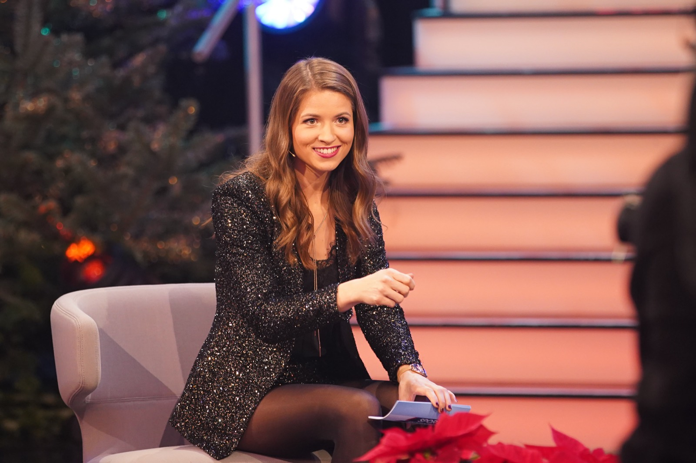
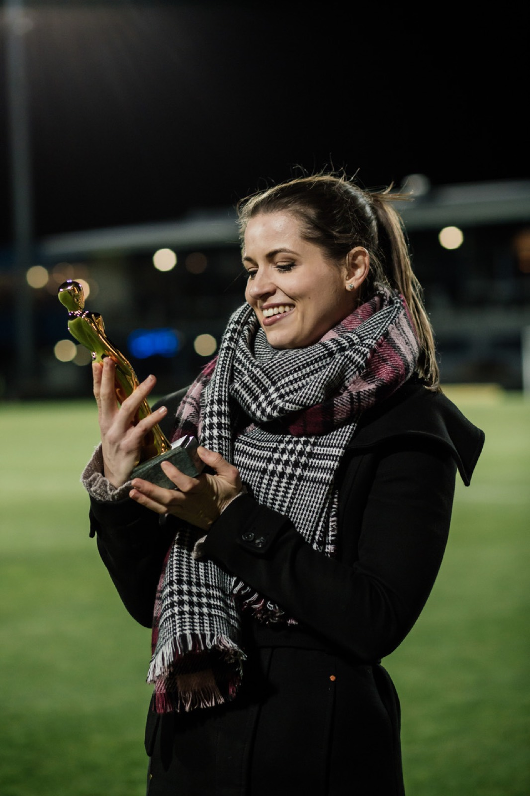
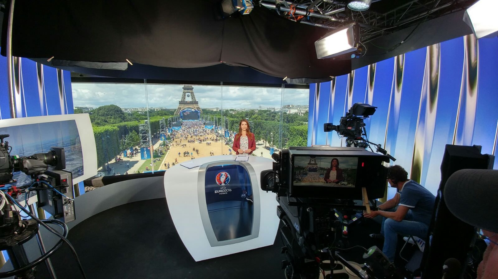
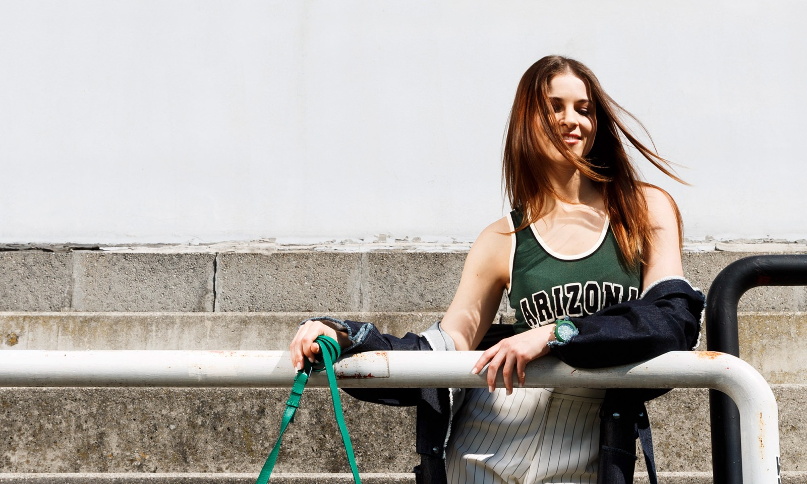
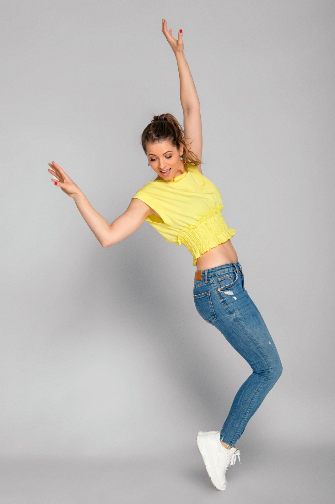
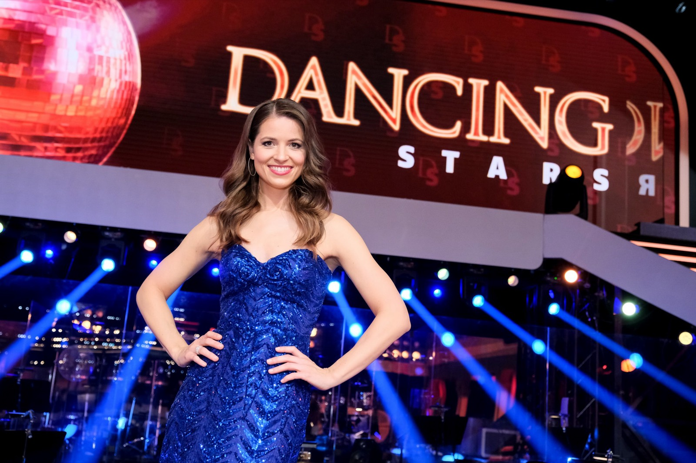

TV & Eventmoderation
TV & Eventmoderation
seit 2011
„Von der Fußball Champions League bis zum Opernball. Ich moderiere live, souverän und mit einem spürbaren Lächeln, egal was auf der Bühne passiert.“
Kristina Inhof

Wenn die Kamera läuft, bin ich ganz in meinem Element. Vom Fußball bis zu den großen Show-Abenden im ORF: Dancing Stars, Alles Opernball, Die große Chance der Chöre und die Song-Contest-Punktevergabe – ich liebe das Mitfiebern, die Freude, das Herzklopfen. Mein persönliches Highlight: die ROMY 2021.
Eine Moderatorin. Viele Bühnen.
Ob im Fernsehstudio, am Spielfeldrand oder auf der Bühne eines internationalen Unternehmens: Ich bin gern mittendrin. Ich liebe die Vielfalt. Die Themen. Die Menschen. Und diesen Moment, wenn es live wird.
Spontan im richtigen Moment und mit einem feinen Gespür für Menschen und Atmosphäre – ich führe souverän durch Ihr Event: Galas, Award-Shows, Firmenjubiläen, Eröffnungen, Talkrunden und Produktlaunches, auf Deutsch, Englisch oder Spanisch.

Ich liebe die Energie des Fußballs und moderiere mit Begeisterung, Erfahrung und Fachwissen. Ob beim Fußball live im ORF, bei PULS 4 oder Sky Deutschland. Eine besondere Anerkennung für mich: dreimal Sportjournalistin des Jahres.
On Screen
- ORF Sport
- Dancing Stars
- Alles Opernball
- Sky Sport News
- PULS 4
- Song Contest
Große Marken, echtes Vertrauen.
Ausgezeichnete Erfolge

über mich
Kristina Inhof · TV & Eventmoderatorin
Sprechen war immer mein Ding.
Schon in der Schule haben mich Lehrerinnen und Lehrer ermutigt, weil ich Referate mit Freude gehalten habe. Daraus ist ein Beruf geworden.
Geduld, Ausdauer und ein bisschen Mut.
Der Weg ins Fernsehen war nicht gerade. Es gab Castings ohne Zusage und Jahre, in denen ich mehr investiert als verdient habe. Ich habe trotzdem an mich geglaubt. Diese Ausdauer kommt aus dem Sport, und sie prägt bis heute, wie ich arbeite.
Wer mich bucht, bekommt eine Moderatorin, die sich in jedes Thema einarbeitet und auf der Bühne trotzdem locker bleibt. Auch wenn es um Cloud-Security oder Bilanzen geht.

Ich spreche vor Leuten und erzähle ihnen Dinge. Ob im Klassenzimmer, im Fernsehstudio oder auf der Eventbühne, macht keinen Unterschied.Kristina Inhof
Stationen
- seit 2015ORFSport & Fußball, Alles Opernball, Die große Chance der Chöre, ORF 1 Freistunde, Song Contest Punktevergabe
- 2021Dancing Stars, als KandidatinEin Jahr nach der Moderation selbst auf dem Parkett
- 2020Dancing Stars, als ModeratorinEine ganze Staffel live am Freitagabend
- 2015Sky DeutschlandSky Sport News HD
- 2012 – 2015PULS 4UEFA Champions League
- 2011 – 2015W24Moderation verschiedener Sendungen
- 2007 – 2008Erste SchritteKronen Zeitung, Radio 88.6, Austria 9 TV
Studium
Bachelor Sportwissenschaften. Das Wissen hinter dem Sport, über den ich berichte.
Ausbildung
WIFI Medienakademie. Moderationscoaching bei Margarete Bittner und Michael Rossié.
Sprechtraining
Bei Uwe J. Hackbarth, Petra Falk und Nathalie Claude.
TV Moderation
Rotes Licht an. Ich bin da.
Voll konzentriert und mit einem Lächeln. Im ORF verbinde ich Sport und Unterhaltung und bringe die Emotionen dorthin, wo sie hingehören: zu den Menschen vor dem Bildschirm.

ORF Sendungen
Von der Länderspiel-Übertragung bis zur Samstagabend-Show.
Sport & Fußball
Live-Übertragungen, Frauen-Länderspiele und die 2. Liga in ORF 1 und ORF Sport+.
Die große Chance der Chöre
Samstagabend-Show mit großem Publikum und viel Gefühl.
Dancing Stars & Opernball
Glanz, Musik und Live-Gespräche bei Österreichs großen Abenden.
- Sport & Fußball
- Dancing Stars
- Alles Opernball
- ORF 1 Freistunde
- Die große Chance der Chöre
- Song Contest · Punktevergabe Österreich
Ausgezeichnete Erfolge
Sender
Event Moderation
Ein Saal. Eine Chance.
Auf der Eventbühne gibt es keinen zweiten Take. Ich gewinne Ihr Publikum in den ersten Minuten und halte den roten Faden bis zum letzten Applaus.
Souverän neben jedem Vorstand.
Ob IT-Konferenz, Autopräsentation oder Jubiläumsgala: Oft stehen vier Führungskräfte auf der Bühne und vor ihnen ein Saal voller Fachleute. Ich halte das Gespräch zusammen, stelle die richtigen Fragen und lasse Ihre Speaker gut aussehen.
Dafür überlasse ich wenig dem Zufall. Ich lerne Ihre Themen, Ihre Produkte und Ihre Menschen vorab kennen. So kann ich auf der Bühne spontan sein, ohne dass Ihre Botschaft verloren geht.
Formate
- Galas
- Award-Verleihungen
- Firmenjubiläen
- Kongresse
- Internationale Tagungen
- Podiumsdiskussionen
- Produktlaunches
- Eröffnungen
- Sport-Events
Sprachen
- Deutsch
- English
- Español
So arbeiten wir
Briefing-Gespräch, Ablauf und Moderationstexte, Abstimmung mit Regie und Technik. Am Veranstaltungstag bin ich frühzeitig vor Ort.
Referenzen
Termin
schon fix?
Dann lassen Sie uns sprechen. Je früher ich Ihr Datum kenne, desto sicherer kann ich es für Sie reservieren.
Verfügbarkeit anfragen →Kontakt
Lassen Sie uns sprechen.
Schreiben Sie mir direkt per E-Mail oder nutzen Sie das Formular. Ich antworte persönlich.
Hilfreich für Ihre Anfrage
- Datum und Ort der Veranstaltung
- Art des Events und Anzahl der Gäste
- Moderationssprache
- Ablauf oder Programm, falls schon vorhanden
Rechtliches
Impressum
Informationen gemäß § 5 E-Commerce-Gesetz und Offenlegung gemäß § 25 Mediengesetz.
Medieninhaberin & Herausgeberin
Kristina Inhof
[Straße Hausnummer]
[PLZ Ort]
Österreich
Kontakt
E-Mail: office@kristinainhof.at
Unternehmensgegenstand
Moderation von Fernsehsendungen und Veranstaltungen
Berufsrechtliches
[Gewerbe/Tätigkeit, Mitgliedschaft Wirtschaftskammer und UID-Nummer, falls vorhanden – sonst Abschnitt entfernen]
Grundlegende Richtung
Diese Website informiert über die Tätigkeit von Kristina Inhof als TV- und Eventmoderatorin.
Haftung für Links
Diese Website enthält Links zu externen Websites (z. B. YouTube, Instagram, LinkedIn, Facebook). Für deren Inhalte sind ausschließlich die jeweiligen Betreiber verantwortlich.
Bildnachweise
[Fotograf:innen bzw. Bildrechte, z. B. ORF, GEPA pictures, Katharina Schiffl]
Gestaltung & Umsetzung
Online Boutique Agentur
Rechtliches
Datenschutzerklärung
Der Schutz Ihrer persönlichen Daten ist mir wichtig. Hier erfahren Sie, welche Daten beim Besuch dieser Website verarbeitet werden. Kurz gesagt: keine Tracking- oder Marketing-Cookies, keine Analyse-Tools, keine eingebetteten Inhalte von Drittanbietern.
1. Verantwortliche
Kristina Inhof, [Adresse wie im Impressum]
E-Mail: office@kristinainhof.at
2. Hosting und Server-Logfiles
Diese Website wird über Cloudflare Pages bereitgestellt (Cloudflare, Inc., 101 Townsend St., San Francisco, CA 94107, USA). Beim Aufruf der Website verarbeitet Cloudflare technisch notwendige Daten, insbesondere Ihre IP-Adresse, Datum und Uhrzeit des Zugriffs, die aufgerufene Seite und Informationen zum verwendeten Browser. Diese Verarbeitung ist erforderlich, um die Website sicher und stabil auszuliefern und vor Angriffen zu schützen.
Rechtsgrundlage ist mein berechtigtes Interesse an einem sicheren und funktionsfähigen Webauftritt (Art. 6 Abs. 1 lit. f DSGVO). Cloudflare ist unter dem EU-US Data Privacy Framework zertifiziert; mit Cloudflare besteht ein Auftragsverarbeitungsvertrag inklusive Standardvertragsklauseln.
3. Kontaktformular und E-Mail
Wenn Sie mir über das Kontaktformular oder per E-Mail schreiben, verarbeite ich Ihre Angaben (Name, Unternehmen, E-Mail-Adresse, Telefonnummer, Nachricht), um Ihre Anfrage zu beantworten und gegebenenfalls ein Angebot zu erstellen. Pflichtangaben sind Name, E-Mail-Adresse und Nachricht.
Rechtsgrundlage ist die Durchführung vorvertraglicher Maßnahmen bzw. die Erfüllung eines Vertrags (Art. 6 Abs. 1 lit. b DSGVO) sowie mein berechtigtes Interesse an der Beantwortung von Anfragen (Art. 6 Abs. 1 lit. f DSGVO).
Anfragen über das Formular werden in einem geschützten Speicher bei Cloudflare abgelegt und [zusätzlich über den E-Mail-Dienst Resend (Resend, Inc., USA; zertifiziert unter dem EU-US Data Privacy Framework) an mich weitergeleitet – nur nennen, wenn eingesetzt]. Zum Schutz vor Spam wird Ihre IP-Adresse dabei ausschließlich in verschlüsselter (gehashter) Form für höchstens eine Stunde gespeichert.
Ihre Anfrage wird gelöscht, sobald sie erledigt ist und keine gesetzlichen Aufbewahrungspflichten (z. B. für Angebote und Rechnungen) entgegenstehen.
4. Cookies und lokale Speicherung
Diese Website verwendet keine Tracking-, Analyse- oder Marketing-Cookies. Es werden keine Nutzungsprofile erstellt.
Wenn Sie den Hinweis zu Cookies bestätigen, wird in Ihrem Browser (Local Storage) lediglich vermerkt, dass Sie ihn gesehen haben, damit er nicht erneut erscheint. Im passwortgeschützten Verwaltungsbereich wird nach dem Login ein technisch notwendiges Sitzungs-Cookie gesetzt. Beides ist für den Betrieb erforderlich (§ 165 Abs. 3 TKG 2021) und benötigt keine Einwilligung.
5. Schriftarten
Die verwendeten Schriftarten sind lokal auf dem Server dieser Website gespeichert. Beim Laden der Seite wird keine Verbindung zu Google oder anderen Anbietern von Schriftarten hergestellt.
6. Links zu externen Plattformen
Auf dieser Website finden Sie Links zu YouTube, Instagram, LinkedIn und Facebook. Es handelt sich um einfache Verlinkungen: Daten werden an diese Anbieter erst übertragen, wenn Sie einen Link anklicken und die jeweilige Plattform aufrufen. Dort gelten die Datenschutzbestimmungen des jeweiligen Anbieters.
7. Ihre Rechte
Sie haben das Recht auf Auskunft, Berichtigung, Löschung und Einschränkung der Verarbeitung Ihrer Daten, auf Datenübertragbarkeit sowie das Recht, einer Verarbeitung auf Grundlage berechtigter Interessen zu widersprechen. Wenden Sie sich dazu einfach an office@kristinainhof.at.
Wenn Sie der Ansicht sind, dass die Verarbeitung Ihrer Daten gegen das Datenschutzrecht verstößt, können Sie sich bei der Aufsichtsbehörde beschweren. In Österreich ist das die Datenschutzbehörde, Barichgasse 40–42, 1030 Wien, www.dsb.gv.at.
Stand: Oktober 2026